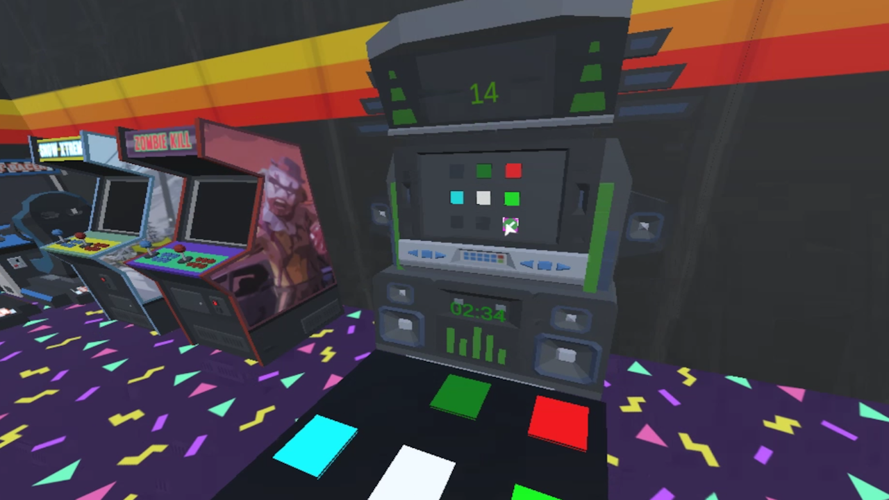

Color Steps
Virtual reality experience developed at H'ability using Unity
This was a virtual reality experience I developed entirely from start to finish, from receiving the design document to the final production stage. The goal was to create a game that helps patients exercise their lower limbs and balance by stepping on illuminated tiles within a given time limit to score points.
As with all of H'ability’s games, the game needed to be flexible and adaptive. Healthcare professionals had to be able to modify the parameters during sessions. Additionally, as new ideas for customization emerged, the game’s architecture had to be modular to accommodate changes over time.
The chosen environment was neon-lit, inspired by arcade rooms, which suited the concept well. However, lighting in VR can be resource-demanding, and lag was not an option for VR headsets, particularly because any latency could negatively affect patient safety during movements. A significant optimization effort was required, and through this process, I discovered methods that improved performance across several games.
For this project, optimizing performance was crucial, as a lag in a game like "Color Steps," where the patient is physically moving, could have serious consequences, including the risk of a fall.